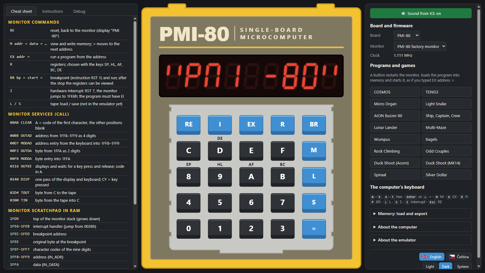

Wolf80
An emulator of the Czechoslovak single-board computers PMI-80, Savia-84 and Stone 1. Their original monitors run on the emulator's own 8080 and Z80 cores, with the display, keyboard and sound modelled as on the real boards. In the browser, offline or as a Windows EXE.